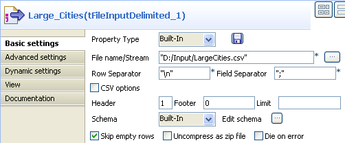
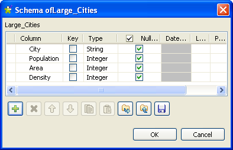
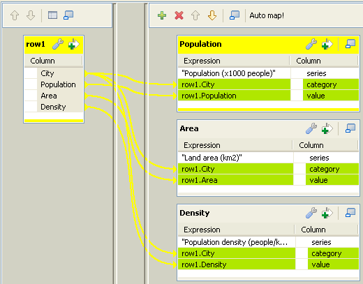
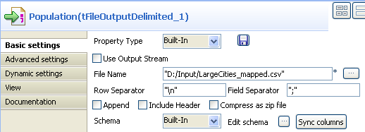
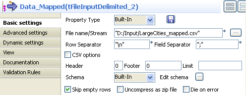
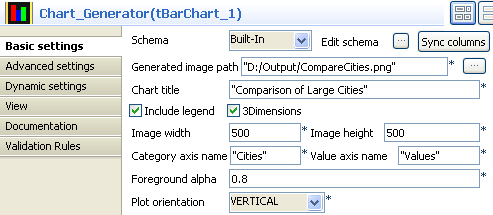
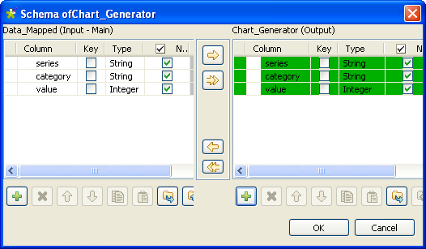

|
Component family |
Business Intelligence/Charts | ||||
|
Function |
tBarChart reads data from an input flow and transforms the data into a bar chart in a PNG image file. | ||||
|
Purpose |
tBarChart generates a bar chart from the input data to ease technical analysis. | ||||
|
Basic settings |
Schema and Edit schema |
A schema is a row description, i.e., it defines the number of fields to be processed and passed on to the next component. The schema is either built-in or remotely stored in the Repository.
| |||
|
|
|
Built-in: The schema is created and stored locally for this component only. Related topic: see Talend Open Studio User Guide. | |||
|
|
|
Repository: The schema already exists and is stored in the Repository, hence can be reused. Related topic: see Talend Open Studio User Guide. | |||
|
|
Sync columns |
Click to synchronize the output file schema with the input file schema. The Sync function only displays once the Row connection is linked with the output component. | |||
|
|
Generated image path |
Name and path of the output image file. | |||
|
|
Chart title |
Enter the title of the bar chart to be generated. | |||
|
|
Include legend |
Select this check box if you want the bar chart to include a legend, indicating all series in different colors. | |||
|
|
3Dimensions |
Select this check box to create an image with 3D effect. By default, this check box is selected and the bars representing the series of each category will be stacked one over another. If this check box is cleared, a 2D image will be created, with the bars displayed one besides another along the category axis. | |||
|
|
Image width and Image height |
Enter the width and height of the image file, in pixels. | |||
|
|
Category axis name and Value axis name |
Enter the category axis name and value axis name. | |||
|
|
Foreground alpha |
Enter an integer in the range of 0 to 100 to define the transparency of the image. The smaller the number you enter, the more transparent the image will be. | |||
|
|
Plot orientation |
Select the plot orientation of the bar chart: VERTICAL or HORIZONTAL. | |||
|
Advanced settings |
tStat Catcher Statistics |
Select this check box to collect log data at the component level. | |||
|
Usage |
This component is mainly used as Output component. It requires an Input component and Row main link as input. | ||||
This scenario describes a simple Job that reads data from a CSV file and transforms the data into a bar chart. The input file is shown below:
Because the input file has a different structure than the one required by the tBarChart component, this use case uses the tMap component to map the data to a three-column CSV file before using the tBarChart component to generate a bar chart file.
![[Note]](../images/note.png) | |
You will usually use the tMap component to adjust the input schema in accordance with the schema structure of the tBarChart component. For more information about how to use the tMap component, see Talend Open Studio User Guide and the section called “tMap”. |
Drop the following components from the Palette to the design workspace: two tFileInputDelimited components, a tMap, three tFileOutputDelimited components, and a tBarChart. Relabel the components to best describe their functionality.
Double-click the first tFileInputDelimited component to display its Basic settings view.
Fill in the File name field by browsing to the input file.
In the Header field, specify the number of header rows. In this use case, you have only one header row.
Leave the other parameters as they are.
Click Edit schema to describe the data structure of the input file. In this use case, the input schema is made of four columns: City, Population, Area, and Density. Upon defining the column names and data types, click OK to close the schema dialog box.

Connect the tFileInputDelimited to the tMap using a Row > Main connection.
Double-click the tMap to open the Map Editor.
Click the green plus button on top of the output panel to add three output tables: Population, Area, and Density. These output table names will appear as the labels of the connections linking the tMap to the output components on the design workspace.
Use the Schema editor to add three columns to each output table: series (string), category (string), and value (integer).
In the relevant Expression field of the output tables, enter the series names, as shown above. These series names will appear in the legend of the bar chart.
Drop the City column of the input table onto the category column of each output table.
Drop the Population column of the input table onto the value column of the Population table.
Drop the Area column of the input table onto the value column of the Area table.
Drop the Density column of the input table onto the value column of the Density table.
Click OK to save the mappings and close the Map Editor.
Right click the tMap component and select Row > Population to connect it to the first tFileOutputDelimited component.
Connect the tMap to the other tFileOutputDelimited components in the same way but by selecting Area and Density respectively.
Double-click the first tFileOutputDelimited component to display its Basic settings view.
In the File Name field, define a CSV file to send the mapped data flows to. In this use case, we name the output file to be created LargeCities_mapped.csv. This file will be used as the input to the tBarChart component. If an existing file name is specified, make sure that the Append check box is cleared.
Leave the other parameters as they are.
For the other two tFileOutputDelimited components, use the same file path as defined for the first tFileOutputDelimited component, and select the Append check box.
Make sure that the Append check box is selected so that all the mapped data flows will go to the same file without overwriting the existing data.
Connect the first tFileInputDelimited component to the second tFileInputDelimited component using a Trigger > OnSubjobOK connection.
Connect the second tFileInputDelimited component to the tBarChart using a Row > Main connection.
Double-click the second tFileInputDelimited component to display its Basic settings view.
Fill in the File name field with the file path and name defined in the Basic settings view of each of the tFileOutputDelimited components. In this use case, the input file to the tBarChart is LargeCities_mapped.csv.
Leave the other parameters as they are.
As the input schema needs to have a structure required by the tBarChart component, we will copy the structure from the schema of the tBarChart component.
Double-click the tBarChart component to display its Basic settings view.
In the Generated image path field, define the file path of the image file to be generated.
In the Chart title field, define a title for the bar chart.
Define the category and series axis names.
Define the size and transparency degree of the image if needed. In this use case, we simply use the default settings.
Click Edit schema to open the schema dialog box.
Copy all the columns from the output schema to the input schema by clicking the left-pointing double arrow button. Then, click OK to close the schema dialog box.